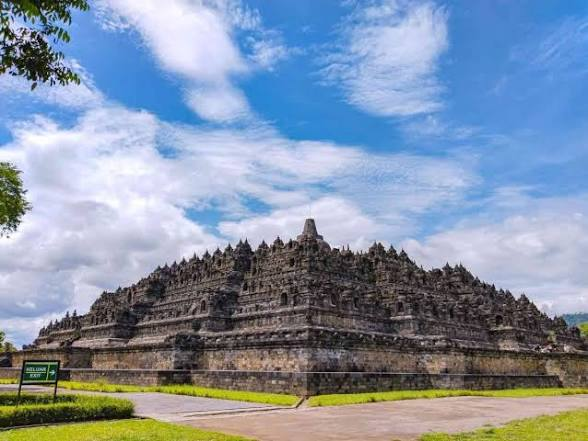

Candi Borobudur adalah candi Buddha terbesar di dunia dan menjadi ikon wisata paling terkenal di Indonesia. Terletak di Kabupaten Magelang, Jawa Tengah, sekitar 40 km dari Yogyakarta, candi ini dibangun pada abad ke-8 pada masa Dinasti Syailendra.

Borobudur bukan sekadar tumpukan batu. Ia dibangun dengan 2 juta balok batu tanpa semen, dengan 2.672 panel relief dan 504 arca Buddha. Strukturnya terdiri dari 9 tingkat: 6 tingkat berbentuk bujur sangkar dan 3 tingkat melingkar, dengan satu stupa induk di puncaknya. Jika dilihat dari atas, bentuknya seperti mandala raksasa.
Pada tahun 1991, UNESCO menetapkannya sebagai Situs Warisan Dunia.
Sekarang sistem tiket di Borobudur dibagi dua, ini penting biar tidak salah beli:
| Jenis Tiket | Harga |
|---|---|
| Tiket Pelataran (Reguler) Hanya di halaman taman, tidak naik candi |
Dewasa: Rp 50.000 Anak (3-10th): Rp 25.000 Weekend: Rp 60.000 |
| Tiket Naik Struktur Candi Sudah termasuk Guide + Sandal Upanat |
Dewasa: Rp 150.000 Anak: Rp 100.000 Kuota 1.200/hari |
| Mancanegara - Pelataran | Rp 400.000 |
| Mancanegara - Naik Candi | Rp 455.000 |
Buka setiap hari pukul 06.30 - 17.00 WIB. Batas terakhir penukaran tiket jam 16.00 WIB. Waktu terbaik datang adalah jam 06.30 pagi, masih sepi dan adem.
Semua kendaraan diarahkan ke area parkir resmi di Kampung Seni Borobudur (KSB).
Sudah termasuk shuttle mobil listrik gratis dari parkiran ke candi.
Borobudur bukan hanya untuk berfoto, tapi untuk memahami hebatnya leluhur Nusantara.